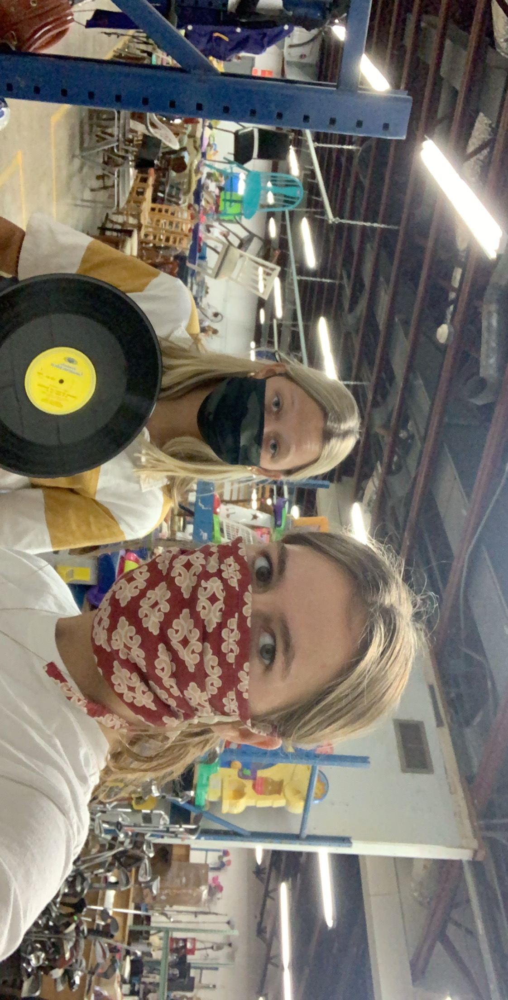
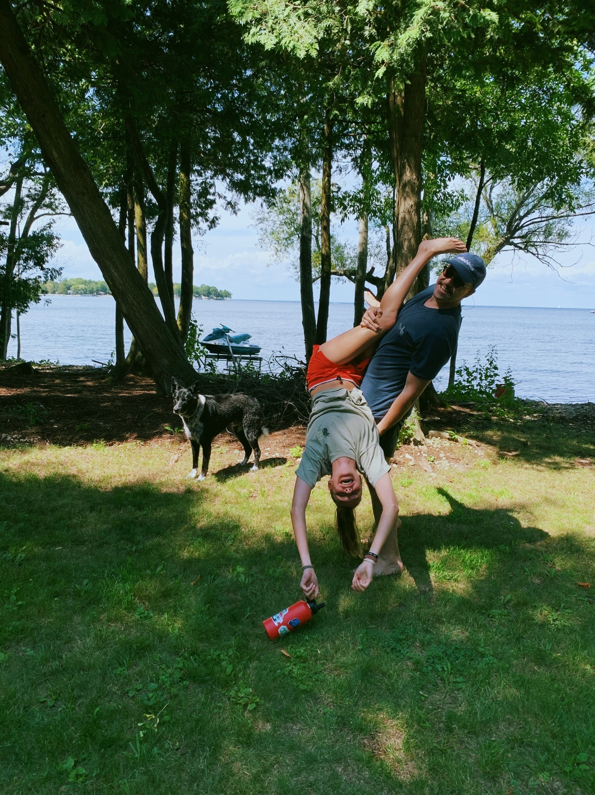
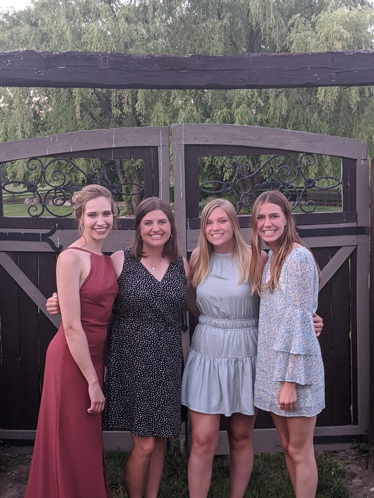

Spending Time with My Friends
While this page might be contested as to whether or not it can be considered a "hobby", I would say that regardless, hanging out with friends is one of my favorite ways to spend my time. The people that I spend the most time with are currently the friends that I live with, but I do have some friends back home that I like to visit when I get the chance.



I look forward to making more memories with my friends in years to come. This will always be a very important part of my life.